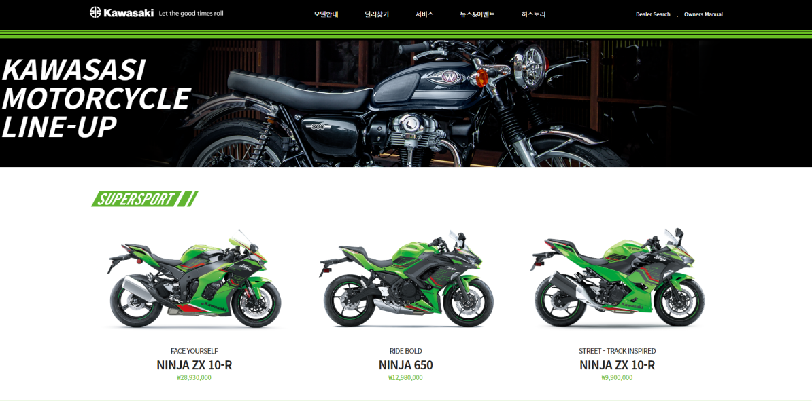
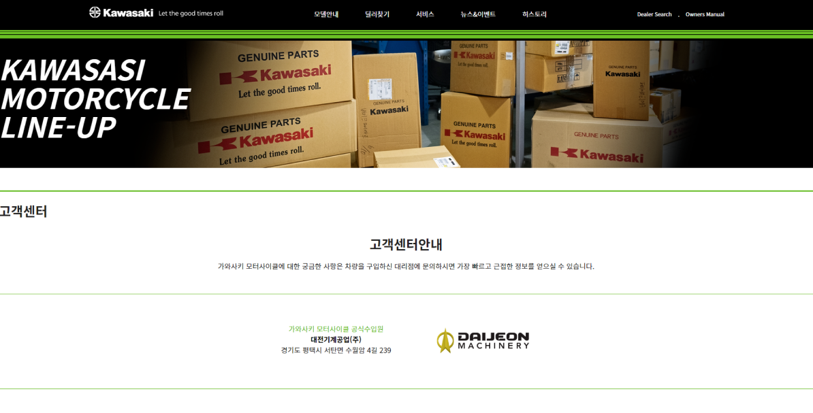

가와사키 코리아 홈페이지


만들게 된 이유
바이크를 좋아하고, 성능 디자인에서 유명한
가와사키 바이크 홈페이지입니다.
디자인과 성능 그리고 유니크함까지 갖고 있는 바이크 회사라
닮고 싶은 마음에 제작을 도전하였습니다.
작업 개요
작업 시일 : 약3일
작업 툴 : VScode, Figma
중점사항
· css 활용 능력 (hover시 바뀌는 이미지 등)과 인덱스 구성
· Jquery 활용 능력 (배너 페이드 인 아웃, 드랍 다운 메뉴 등)
· 백그라운드에 자동재생되는 영상 삽입